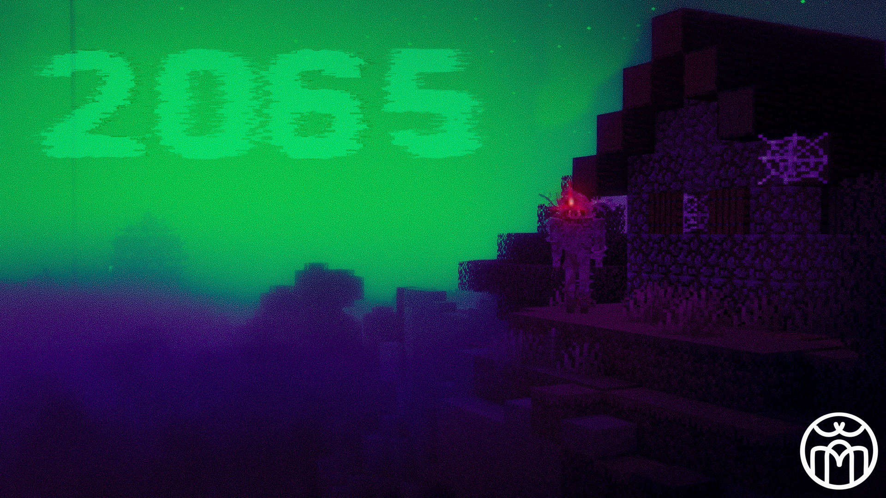
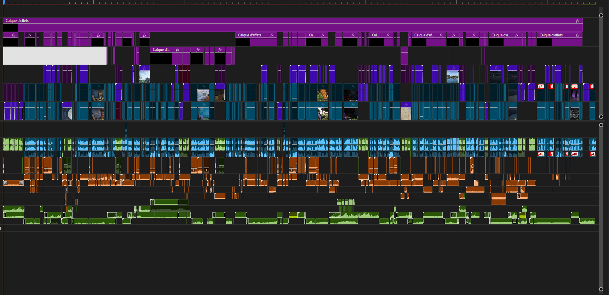

J'ai décidé, afin de signer une sorte de fin d'arc naratif de ma vie, de produire un court métrage sur le jeu Minecraft. Mais pas de n'importe qu'elle manière. Des ajout de modules de codes au jeu étant possible, un communauté de modding est très présente sur le jeu. Et parmis eux, un mod gouverne la création de contenu sur minecraft: Minecraft Replay Mod
En résumé, ce mod permet d'enregistrer le monde autour du personnage, pour ensuite créer des plans cinématique a l'aide d'un outils utilisant un système basique de Timeline contenant l'entireté du rec, la possibilité de jouer sur la vitesse de lecture et de placer des images-clés pour controler la caméra. Bien que les trajectoire ne soient pas des plus précise
(les trajectoires sont très courbés et en mode automatique), c'est amplement suffisant pour créer de la vidéo sur le jeu.
Ainsi, munis d'OBS, tailscale, le modpack créer par mes soins pour avoir exactement l'ambiance horreur que je cherchais, moi et deux de mes amis avons lancé une partie qui dura 4h au total. Ainsi, autour de cette partie purement improvisé et sans scénario, j'ai fais un travail de création d'histoire a l'aide de voix off et de montage.
Ce fut un défi très interressant et plutot divertissant car clairment inhabituel de devoir créer un scénario après le tournage.
